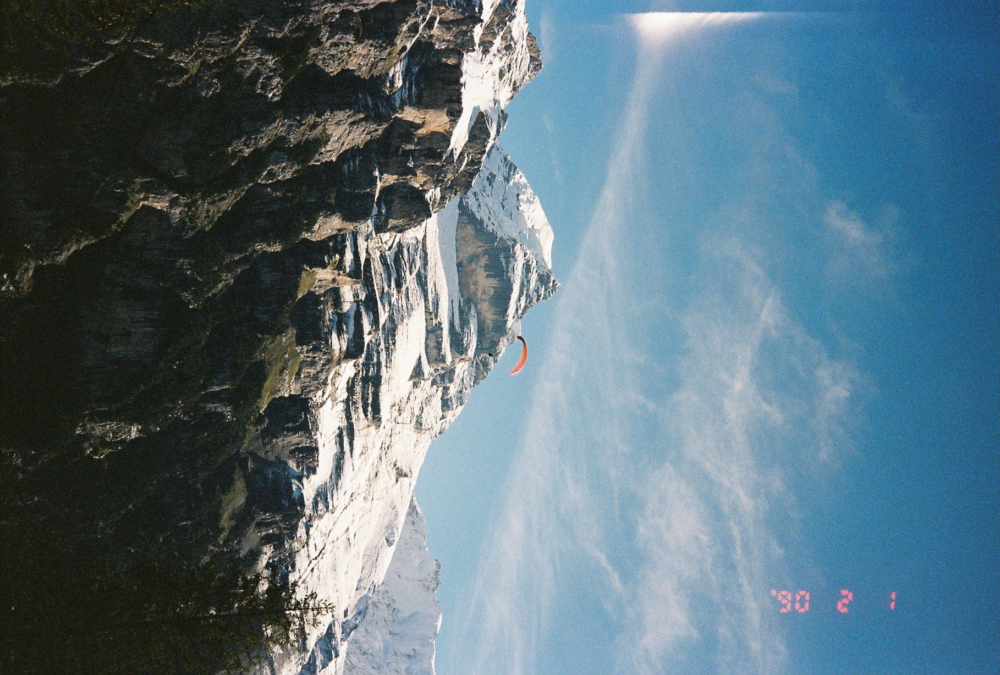
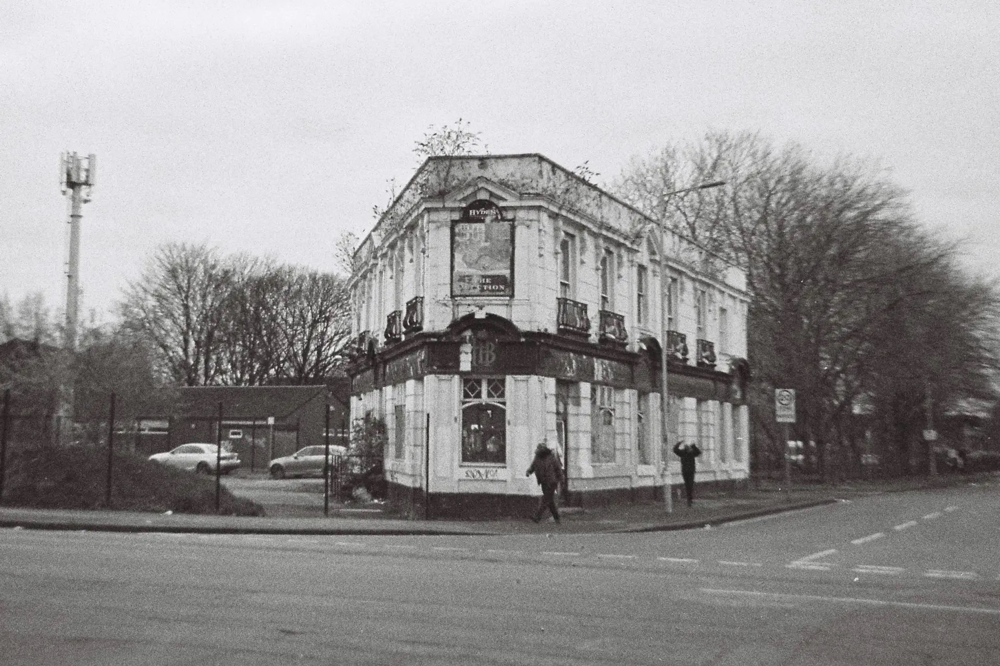
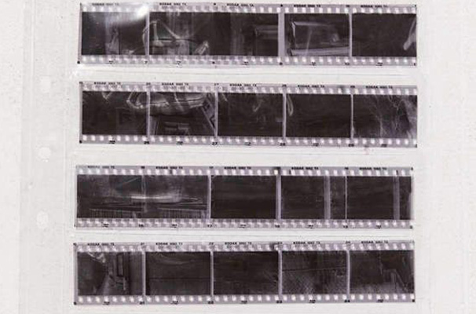
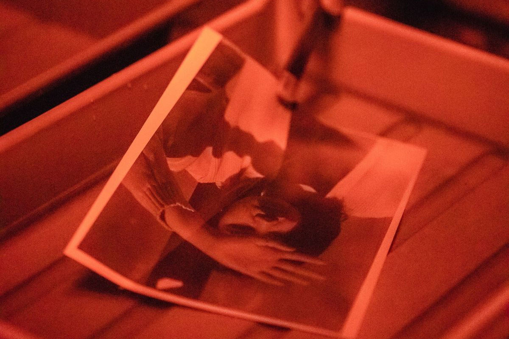
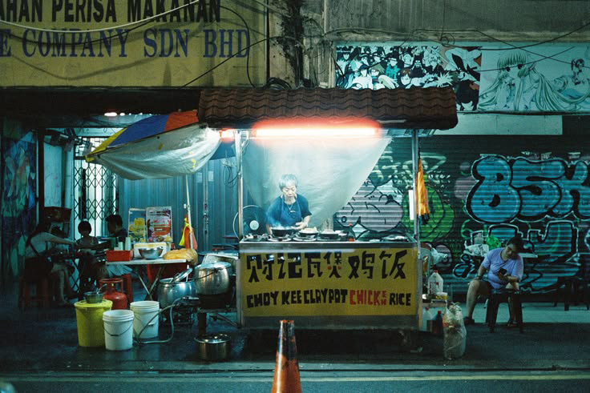
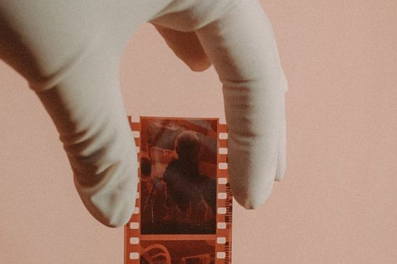

Choosing the Right Film Stock
From the soft tones of Kodak Portra to the cinematic glow of Cinestill 800T, every film stock carries its own personality. This feature explores how color, grain, contrast, and texture shape the final image, and why choosing a film stock is one of the most important creative decisions a photographer can make.

A Guide to Shooting 35mm in the Rain
Rain transforms ordinary streets into reflective, cinematic landscapes, but film cameras demand patience in unpredictable weather. From protecting gear to exposing correctly under cloudy skies, this practical guide covers how to embrace imperfect weather conditions while shooting film outdoors.

Preserving Negatives in the Digital Age
Negatives are fragile physical records of time, yet many archives are deteriorating in closets and storage boxes around the world. Archivists and photographers discuss preservation techniques, scanning workflows, and why physical photographic history still matters in a cloud-based world.

The Quiet Revival of Community Photo Labs
As independent camera stores disappear, community darkrooms and local labs are quietly becoming cultural spaces for collaboration and learning. This article visits several small labs keeping analog photography alive through workshops, shared spaces, and human connection.

A Beginner's Guide to Shooting Film at Night
Night photography on film requires patience, experimentation, and an understanding of light. From long exposures to pushing film stocks, this guide breaks down how photographers capture cities after dark.

Inside the Darkroom: Printing Your First Photograph
The darkroom remains one of the most hands-on experiences in photography. From test strips to chemical trays and enlargers, this article follows the process of making a silver gelatin print from start to finish.